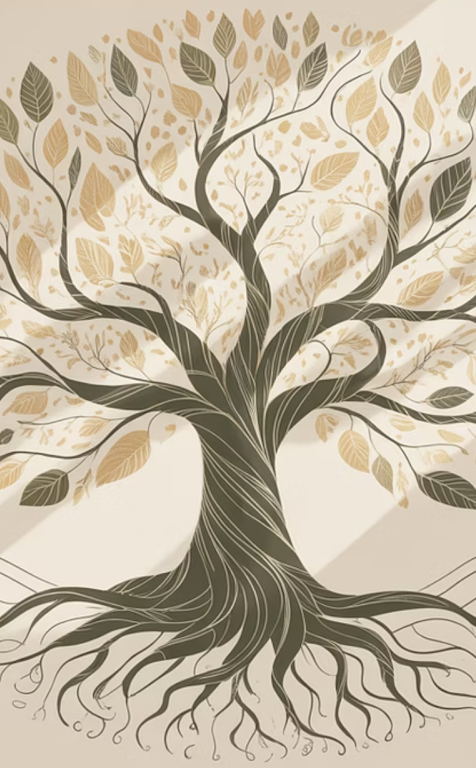

Our approach
The Chestnut Tree Socio-Ecological School
An international, transdisciplinary programme for children from approximately 3 months to 16 years old, centred on the whole growth of the child.
Vision & Mission
Vision
To create a place where children, families, and educators come together as a community, where transparency and values are practised in favour of education, and where we learn to embrace our environment and connect our hearts to it peacefully.
Mission
To create an international community of learners and collaborators for a sustainable and socio-ecological education.
Our 4 Pillars
What every child at The Chestnut Tree develops
Care for Oneself
Developing oneself holistically: physical health, emotional intelligence, self-awareness, and personal responsibility. When we know and care for ourselves, we become grounded and resilient human beings.
Care for Others
Building empathy, compassion, respectful relationships, and a sense of belonging. Integral development means recognising that we are shaped through our connections with others.
Care for Nature
Understanding our place within living systems. Children learn to observe, respect, and act as stewards of the natural world — because nature is not separate from us, but part of who we are.
Care for the Future of Our Planet
Taking responsible and informed action today. Our decisions as individuals and communities shape the world that future generations will inherit.
Our Socioecological Framework
Our framework integrates ecology, sustainability, and human development across all learning — not as separate subjects, but as lenses through which everything connects. Four dimensions shape how educators and children approach any topic: Social, Ecological, Economic, and Cosmovision (values, ethics, and humanity's relationship with the living world).
We are also a member of the UNESCO Greening Education Partnership, integrating climate and sustainability thinking through five stages: Know, Connect, Question, Care, and Act. Read more on our Legacy page →
Educational Levels
At The Chestnut Tree, we believe who a child is matters more than how old they are. Classes are structured around how a child relates to themselves and others, and where they are in their learning journey — not by rigid age categories.
Ages 3mo–4
Early Childhood / Nursery
Love for nature, sense of responsibility, sensory outdoor exploration.
Ages 5–10
Primary Education
Environmental awareness, social and economic understanding, foundational science and critical thinking about climate justice.
Ages 11–13
Lower Secondary
Systemic change, empathy, and critical thinking — analysing global climate efforts and emerging technologies.
Ages 14–16
Upper Secondary (ESO)
Agency, leadership, and global citizenship — addressing complex challenges through interdisciplinary projects.
We follow the child, not the calendar.
How we report progress
Our Growth System — from Trunk to Fruit
Assessment at The Chestnut Tree is not something we do to children — it's something we do with them. At the start of each semester, students choose their own growth intention, using the same tree metaphor as our school's name.
Trunk
"I am building strength and stability. I am learning the foundations."
Branch
"I am stretching out. I am exploring, connecting, and taking on more responsibility."
Leaf
"I am contributing. I am expressing myself and supporting others."
Fruit
"I am ready to give. I take full responsibility for my learning and my actions."

Each phase carries a corresponding level of responsibility and autonomy — a child who chooses "Fruit" is committing to more independence; a child who chooses "Trunk" is asking for more support. Both are equally valid and equally honoured. For our youngest children, teachers complete a weekly observation instead, reviewed with our school psychologist.
"Learning needs to return to its roots in the whole community of people and no longer exist in separate institutions... This is a living, evolving learning system that embraces global considerations alongside local concerns, geared to plant seeds for the next seven generations."